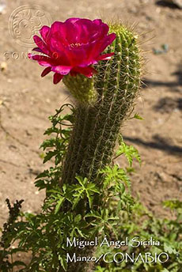
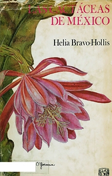
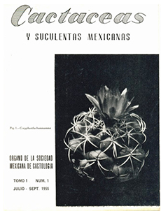

Referencias
- Arias S. 2002. Helia Bravo Hollis. Acta Botánica Mexicana, julio, 59:1-3. Instituto de Ecología A.C.
- Bravo H.H. y L. Scheinvar. 1995. El interesante mundo de las cactáceas. Fondo de Cultura Económica. México D.F.
- Bravo H.H. 2004. Memorias de una vida y una profesión. Dirección General de Divulgación de la Ciencia, UNAM. Instituto de Biología, UNAM.
- Butanda C. A. 1991. Contribución a la biología mexicana por Helia Bravo Hollis: Una guía bibliográfica. Cuadernos del Instituto de Biología, UNAM.
- Salcedo Meza, C. 2016. Helia Bravo Hollis, la pasión por la ciencia de una mujer centenaria. ¿Cómoves? N. 34 UNAM, México D.F.
Helia Bravo Hollis
1901 – 2001
Me llamo Helia Bravo Hollis y nací en la Ciudad de México en 1901. Inicié mi vida con el siglo XX, durante el gobierno del general Porfirio Díaz poco antes de la Revolución Mexicana. Mis abuelos maternos vinieron de Inglaterra y mis abuelos paternos vivían en Guanajuato. Mi mamá Carlota y mi papá Samuel amaban la naturaleza. Los fines de semana salíamos de día de campo a los bosques de encino que quedaban cerca de donde crecimos, en donde ahora pasan avenida Revolución, cerca de la avenida Río Mixcoac en la Ciudad de México. En ese entonces, la gente se bañaba en el cristalino río Mixcoac. En esos paseos familiares me empezó a encantar la naturaleza. Desafortunadamente, hoy ya no existen ni los bosques ni el río.
Cuando tenía menos de doce años, mi papá fue fusilado en el panteón de la Villa ded Guadalupe, cerca de donde hoy está la Basílica, por ser partidario del presidente Francisco I. Madero.
Estudié la prepa en la Escuela Nacional Preparatoria, en un edificio muy antiguo del siglo XVI (1583) y me encantaban las clases de mi maestro, que era un sabio, Isaac Ochoterena. Durante los descansos podía ver a los pintores Diego Rivera y Clemente Orozco entretenidos pintando las paredes de la escuela. Hoy en día ese edificio con mucha historia se conoce como el Antiguo Colegio de San Ildefonso, un museo precioso cercano al Zócalo.
Empecé a estudiar medicina, pero para mi fortuna cuando tenía 23 años (1924), la Universidad Nacional Autónoma de México abrió la carrera de Biología, en la cual inmediatamente me inscribí y me convertí en: ¡la primera bióloga titulada de todo el país! Más tarde pude trabajar ahí mismo como maestra.
Al principio me llamaron mucho la atención los diminutos protozoarios y me podía pasar horas observándolos jugar en el microscopio. Pero muy pronto, encontré la pasión de mi vida: los espinosos cactos. Mi sabio maestro, me encargo su estudio. Esta familia de plantas llamada Cactáceas es originaria de nuestro continente e incluye desde pequeñas biznagas hasta gigantescos órganos, candelabros y tetechos, pasando por los simpáticos viejitos, cardones y los nopales con sus deliciosas tunas.
Mi Maestría en Ciencias Biológicas se enfocó a los cactos de la región de Tehuacán en Puebla, el desierto más sureño de México. Ya me consideraba una “cactóloga” experimentada. Más adelante, di clases de Botánica en la Escuela Nacional de Ciencias Biológicas del Instituto Politécnico Nacional en Tacuba y también fui investigadora del Instituto de Biología de la UNAM, cuando se ubicaba en la hermosa Casa del Lago en el Bosque de Chapultepec. Trabajé con admirables naturalistas como el botánico español Faustino Miranda, el botánico Maximino Martínez y el botánico japonés Eizi Matuda. La entomóloga Leonila Vázquez, la botánica Agustina Batalla y mi hermana Margarita fueron mis alumnas.
Me casé con un compañero de la escuela, José Clemente Robles, quien se convirtió en médico y uno de los primeros neurocirujanos de México. Sin embargo, después de 13 años de matrimonio nos divorciamos sin haber tenido hijos.
En 1937 publique el libro “Las Cactáceas de México”. Me atraía mucho la variedad de cactos distintos, sus hermosas flores, el entender cómo podían vivir en lugares tan secos y su taxonomía, es decir, cuáles eran las relaciones de parentesco entre los distintos cactos. Participé en la creación de la Sociedad Mexicana de Cactología y fui su presidenta y también en la creación del Jardín Botánico de la UNAM. Una sección de este precioso jardín lleva mi nombre. Durante mi vida académica escribí una gran cantidad de artículos científicos. Me despedí en la Ciudad de México en 2001 después de 100 años de una apasionante vida investigando mi gran pasión: los cactos.
Mi hermana Margarita, diez años menor que yo, también fue bióloga dedicada a los gusanos (Helmintóloga), y también vivió 100 años. ¡Quizá la biología es buena para la salud!
Mis favoritos
- 
- Cactácea
- Foto: Miguel A. Sicilia Manzo / Banco de imágenes, CONABIO
Mis lugares
Mis ideas
- 
- Las cactáceas de México - vol. I
Helia Bravo-Hollis. UNAM
- Revista Cactáceas y suculentas mexicanas, Tomo 1, Núm. 1
Julio - Septiembre 1955. Sociedad Mexicana de Cactología